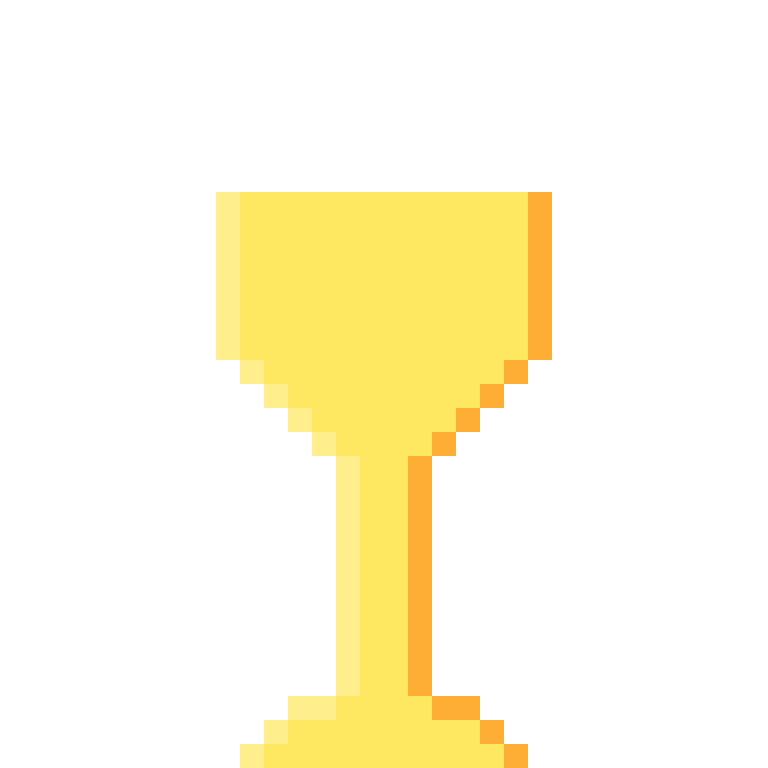
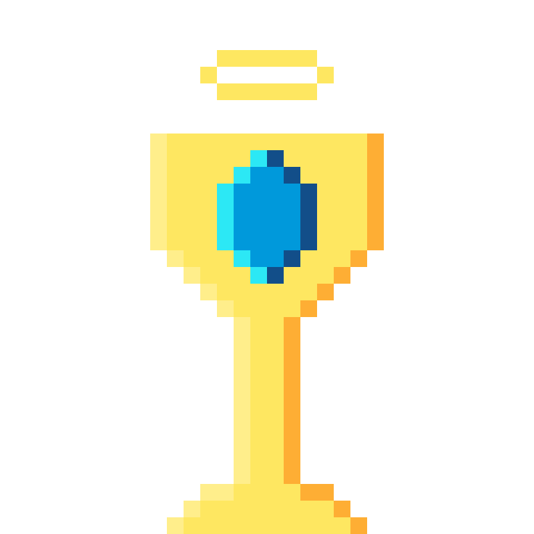
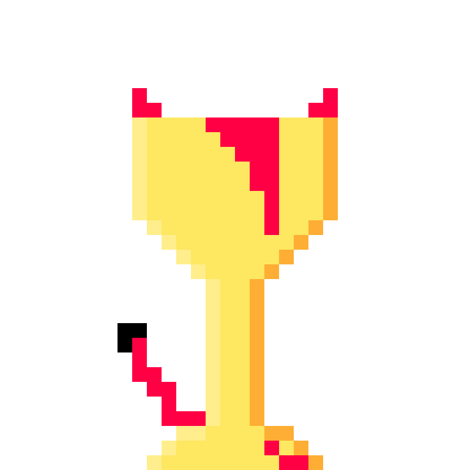

Dobrá práce Tadeáši, úspěšně jsi se dobelhal ke konci Knírové jeskyně a
získal jsi zpět své brko.
Tady máš tenhle pohár, aby jsi neřekl, že jsi to dělal zbytečně...

Pacifist ending
Tadeáši, nevím jestli jseš furt zhulenej a nebo jsi předtím něco pil, ale
vypadá to, že jsi si ty malé mršky oblíbil a ani jedné jsi se nezbavil.
Jsem překvapen a za odměnu si vem to brko a tento pohár...

Genocide ending
Do jednoho jsi je zabil bez lítosti...
Jakoby, aby tě vzali lopatou. Klasicky další, co nenávidí
kníry...

True reset
Koukám, že se snažíš změnit svou minulost Tadeáši, ale to není tak
jednoduché ty závisláku...
I přesto že je to zakázané tak ti ale dám další šanci...
Jednoho dne se Tadeáš rozhodl, že už ho nebaví počítat matiku a přemýšlet
nad fyzikou a tak si pořídil krásné brko a vydal se na Pradouč.
Jakmile se dostal na vrchol hory Erbíno, tak se usadil a položil si brko
vedle sebe.
Bohužel brko se začalo kutálet a spadlo do jeskyne Kníráků...